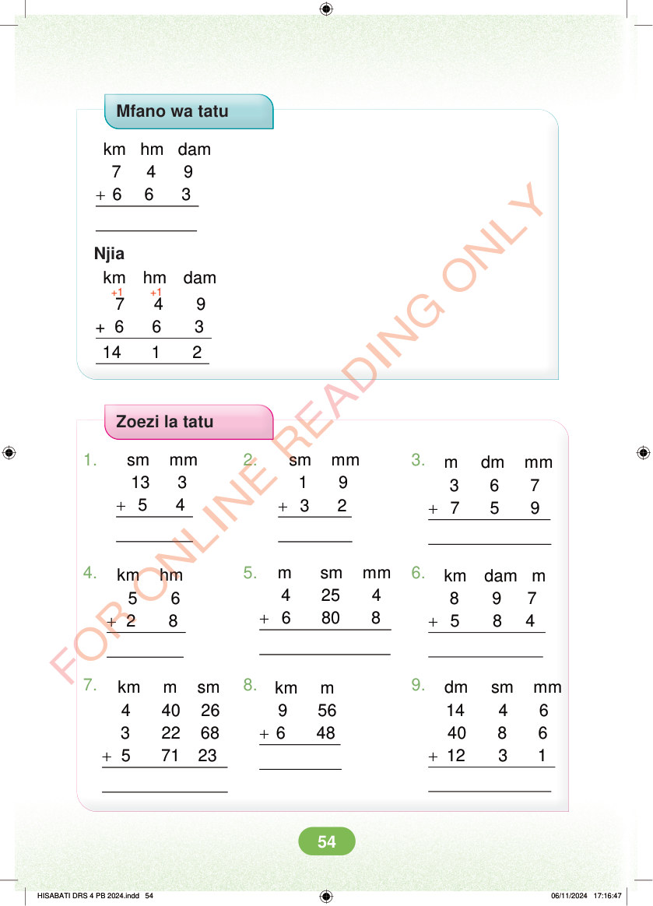

Mfano wa tatu + km hm dam 7 4 9 6 6 3 Njia +1 +1 km hm dam 7 4 9 + 6 6 3 14 1 2 Zoezi la tatu 1. 2. 3. + + sm mm 13 3 5 4 sm mm 1 9 3 2 + m dm mm 3 6 7 7 5 9 4. 5. 6. + m sm mm 4 25 4 6 80 8 + + km hm 5 6 2 8 km dam m 8 9 7 5 8 4 7. 8. 9. + km m 9 56 6 48 + + dm sm mm 14 4 6 40 8 6 12 3 1 km m sm 4 40 26 3 22 68 5 71 23 HISABATI DRS 4 PB 2024.indd 54 HISABATI DRS 4 PB 2024.indd 54 06/11/2024 17:16:47 06/11/2024 17:16:47